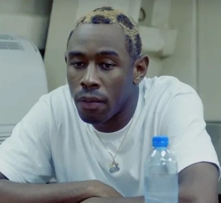

See You Again - Tyler, The Creator (feat. Kali Uchis)

Assistir no YouTube
Okay, okay, okay, okay
Okay, okay, oh
You live in my dream state
Relocate my fantasy
I stay in reality
You live in my dream state
Any time I count sheep
That's the only time we make up, make up
You exist behind my eyelids, my eyelids
Now I don't wanna wake up
20/20, 20/20 vision
Cupid hit me, cupid hit me with precision, I-
Wonder if you look both ways
When you cross my mind, I said, I said
I'm sick of, sick of, sick of, sick of chasing
You're the one that's always running through my daydreams, I-
I can only see your face when I close my eyes
Can I get a kiss? (Can I get a kiss?)
And can you make it last forever? (Oh, forever)
I said I'm 'bout to go to war (go to war)
I don't know if I'ma see you again (see you again)
Can I get a kiss? (Can I)
And can you make it last forever? (Can You?)
I said I'm 'bout to go to war (‘bout to)
And I don't know if I'ma see you again (uh, switch it up)
I said, okay, okay, okay, okie dokie, my infatuation
Is translatin' to another form of what you call it? (Love)
Oh yeah, oh yeah, oh yeah, I ain't met you
I've been looking, stop the waiting
'fore I stop the chasing, like an alcoholic
You don't understand me, what the fuck do you mean?
It's them rose tinted cheeks, yeah it's them dirt-colored eyes
Sugar honey iced tea, bumblebee on the scene
Yeah I'd give up my bakery to have a piece of your pie
Ugh!
20/20, 20/20 vision
Cupid hit me, cupid hit me with precision, I-
Wonder if you look both ways
When you cross my mind, I said, I said
I'm sick of, sick of, sick of, sick of chasing
You're the one that's always running through my daydreams, I-
I can only see your face when I close my eyes, so
Can I get a kiss? (Can I get a kiss?)
And can you make it last forever? (Oh, forever)
I said I'm 'bout to go to war (go to war)
I don't know if I'ma see you again (see you again)
Can I get a kiss? (Can I)
And can you make it last forever? (Can You?)
I said I'm 'bout to go to war (‘bout to)
I don't know if I'ma see you again
Okay, okay, okay, okay
Okay, okay, okay, oh
Okay, okay, okay, okay
Okay, okay, okay, oh
La, la, la, la, la, la, la, la
La, la, la, la, la, la, la
La, la, la, la, la, la, la, la
La, la, la, la, la, la
One more time?